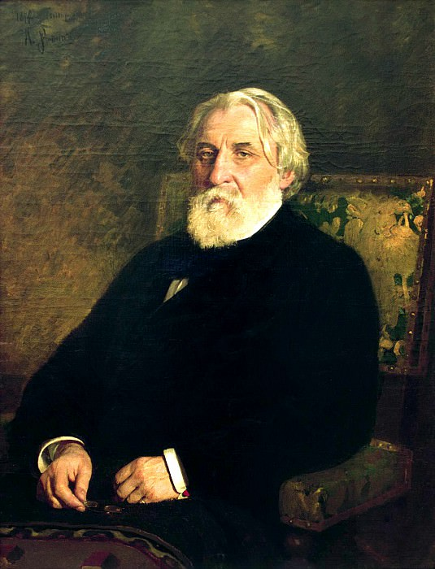
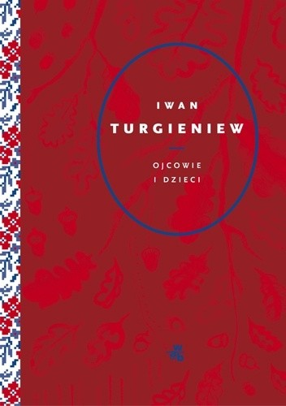
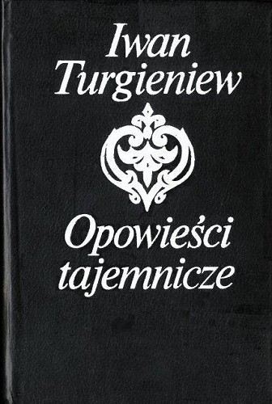
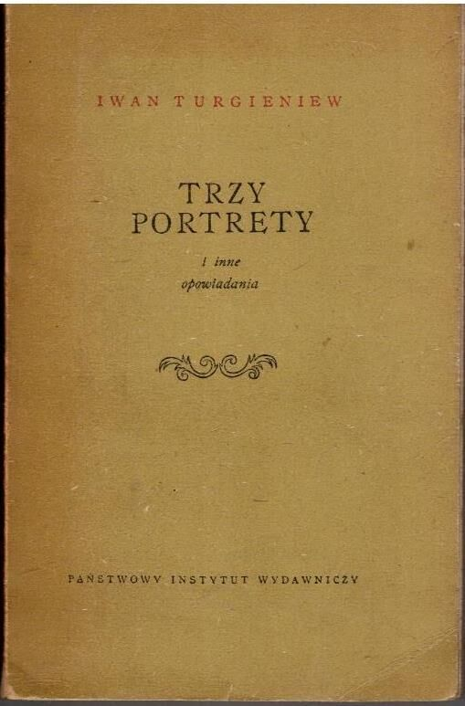

Mistrz estetycznej melancholii i nihilizmu.
Iwan Turgieniew to kluczowa postać literatury rosyjskiej, która jako pierwsza wprowadziła do powszechnego obiegu termin „nihilizm” (w powieści Ojcowie i dzieci). Był najbardziej „europejskim” z rosyjskich pisarzy – jego proza charakteryzuje się niezwykłą lekkością, elegancją języka i subtelnym opisem natury, co stanowi wyraźny kontrast dla ciężkiej, psychologicznej gęstości Dostojewskiego. W swoich utworach po mistrzowsku portretował „zbędnych ludzi” – intelektualistów niezdolnych do czynu – oraz nieuchronny konflikt między starym porządkiem a nadchodzącą, bezkompromisową nowoczesnością.


